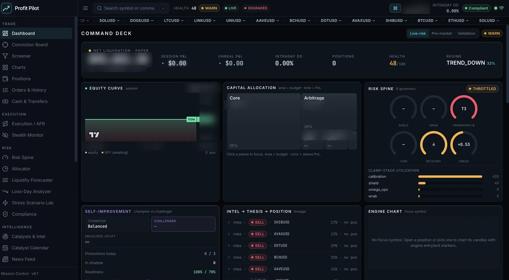

I build trading systems,
then try to break them.
Mateo Sandoval — Finance and Economics, minors in MIS and Business Analytics. I write systematic trading infrastructure and the validation machinery that decides whether any of it deserves to be believed. Every page here states what its numbers are not.
Profit Pilot
An event-driven quantitative trading platform. Thirty-nine locked modules on a deterministic, schema-validated event bus. An eight-governor risk spine that no signal can bypass. Six strategy sleeves competing for capital through an allocator. A research loop that proposes and tests its own parameter changes — behind an out-of-sample gate, a canary, a significance threshold and a cooldown. Running continuously in paper trading against a live brokerage API since mid-2026.

Five independent verification layers sit under it — historical backtesting through the live code path, deterministic blind replay, out-of-sample gating, Monte Carlo and synthetic scenario generation, and continuous live forward testing against a real brokerage API. It is in its first full testing year.
Research methodology
A Python validation pipeline for intraday futures research, built around one measurement. I enumerated 60,480 parameter configurations, scored them all on a training period, then ran the frozen configurations on data the optimisation had never seen.
Shuffle the market, keep the volatility
Within-session bar permutation builds structure-free markets that preserve the volatility profile and destroy serial dependence. 300 worlds; the real result clears the null at p = 0.013 and 0.033 across two timeframes.
Intervals, not point estimates
10,000 day-resamples per frozen config give confidence intervals on Sharpe and drawdown. One config in the committee returns P(Sharpe<0) = 0.502 — a coin flip, published as a null rather than dropped.
Frozen out-of-sample, then audit every part
A sealed data vault with a pre-registered success criterion, still unopened. And a component audit that retired one of my own live engines for adding points while cutting the book's Sharpe from 2.16 to 1.38.
Four documented systems
Each targets a distinct return source. All results: TradingView Strategy Tester, daily bars, 0.05% commission per side, slippage modeled, $10,000 initial capital — in-sample upper bounds, never forecasts.
| System | Market | Net | PF | Max DD | Mechanism |
|---|---|---|---|---|---|
| Compression Breakout | AAPL 2005–26 | +899% | 4.33 | 14.4% | Bollinger-width squeeze → volume-confirmed range break → chandelier trail, risk-sized off the stop |
| Vol-Target Trend Engine | TQQQ 2010–26 | +3,862% | 3.33 | 41.9% | 200-day regime gate plus volatility-targeted exposure — the edge is the sizing policy, not a signal |
| Channel Reversion | QQQ 1999–26 | +104% | 2.28 | 15.2% | Donchian support inside uptrends only, exit at the channel mid. ~80% of the time in cash |
| QV Signal Pro v2 | TQQQ 2011–26 | +489% | 2.17 | −20% worst trade | Money-flow and volatility-calm swing score, rebuilt from a trade-by-trade loss autopsy |
The library page also carries the cross-symbol test where the flagship system barely cleared costs, and the rejection log — roughly thirty candidate improvements tested and killed, with the measured numbers that killed them.
Research tooling
Institutional-flow tracker
Parses 13F-HR, Form 4 and 13D/G filings into quarter-over-quarter position deltas and per-ticker flow. Built to state that 13F data is lagged up to 45 days and to never present it as real-time flow.
Status & scope →AI equity research agent
Ticker in, structured investment memo out — every claim traceable to its filing, datapoint and date, and explicit handling for missing data so the model cannot fill gaps by invention.
Status & scope →Neither is finished. The page shows an honest empty state rather than a mock-up of output that does not exist.
What is claimed, and what is not
Every figure on this site is reported with the methodology that produced it and the scope it applies to.
| Body of work | What is shown | Scope |
|---|---|---|
| Profit Pilot | Architecture, risk controls, verification stack, test coverage, operational discipline | Engineering and research infrastructure. In its first full testing year |
| Intraday research | Placebo-tested, bootstrap-bounded model results under stated fill assumptions | Not a track record. One instrument, one era, small samples |
| Strategy library | Backtests with costs modeled; split-sample and cross-symbol tests shown | In-sample, single-history. Upper bounds, not forecasts |
| Research tooling | Design, architecture and intent | In active development |
| Open source | — | Zero merged pull requests. Not described as a contributor until one merges |
Mateo Sandoval
Junior at Gonzaga University's School of Business Administration — double major in Finance and Economics, double minor in Management Information Systems and Business Analytics. President of Gonzaga Men's Club Soccer, running the program's operating budget and finances. Project consultant with the Gonzaga Sport Consulting Group on sponsorship and market analysis for Spokane Velocity FC. Fluent in English and Spanish.